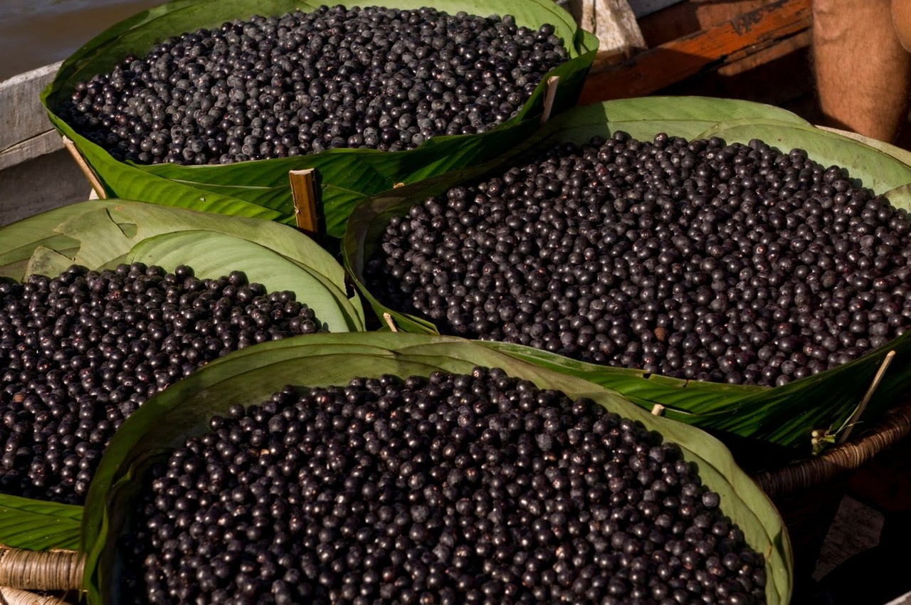

O que é:
O açaí (Euterpe Oleracea) é um pequeno fruto violeta escuro que vem do açaizeiro, uma palmeira da floresta amazônica e tem cerca de 1 a 1,5 cm de diâmetro. Este fruto é consumido à muito tempo pelos indígenas e habitantes da região amazônica devido às suas qualidades nutritivas mais propriamente o seu teor energético.
|
|

|

|
|---|
Valor nutricional:
A seguinte tabela apresenta a composição nutricional de 100g de Açaí:
| Nutrientes | Quantidade |
|---|---|
| Proteínas | 3,8g |
| Gorduras | 12,2g |
| Carboidratos | 36,6 g |
| Fibras | 2,6 g |
| Potássio | 124 mg |
| Vitamina B1 | 360 mcg |
| Cálcio | 118 mg |
| Ferro | 11,8 mg |
| Vitamina C | 17,0 mg |
| Fósforo | 0,5 mg |
Benefícios:
O açaí possui propriedades antioxidantes, depurativas, estimulantes e anti-inflamatórias, possuindo portanto inúmeros benefícios para a nossa saúde, tais como:
- Melhora o sistema imunológico;
- Previne o envelhecimento;
- Melhora o sistema cardiovascular;
- Melhora o funcionamento do intestino;
- É fonte de energia;
- Ajuda no combate à anemia;
- Reduz o colesterol;
O açaí também pode ser utilizado para ajudar no processo de emagrecimento, já que é capaz de diminuir os efeitos negativos de uma dieta irregular ou muito restrita, no entanto, o emagrecimento só acontece com o consumo de açaí associado à prática regular de exercício físico e uma dieta equilibrada.
Como é consumido:
O açaí é consumido de diferentes formas e combinações, o que pode variar de acordo com a região. É considerado um fruto versátil dentro da culinária, pois pode compor vários pratos e ainda ser servido como um sumo. Por outro lado, sendo um fruto associado tradicionalmente ao Brasil e à floresta Amazônica não existe com facilidade noutros locais, portanto deve-se estar atento, pois os produtos que existem nos mercados são em polpa, e na maior parte das vezes, contêm xarope de glucose, polpa de guaraná açucarada e outros adoçantes não naturais que simulam o sabor desta fruta e o tornam viciante, sabendo-se que apesar do açaí ser rico em bons nutrientes em demasia nunca é agradável.